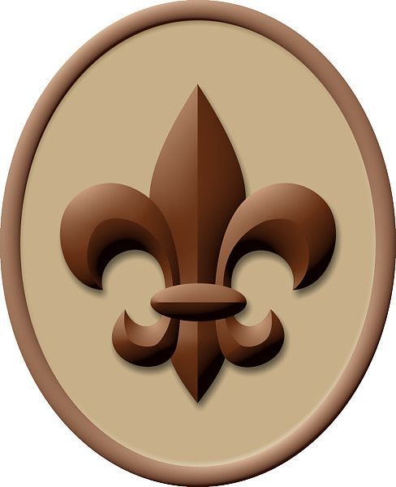
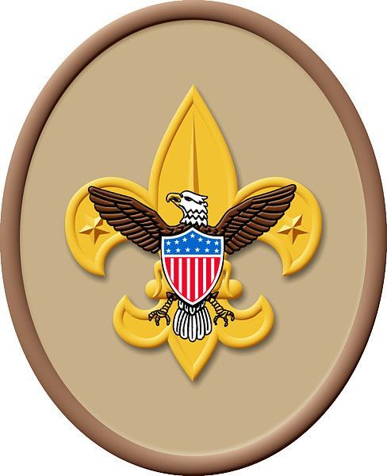
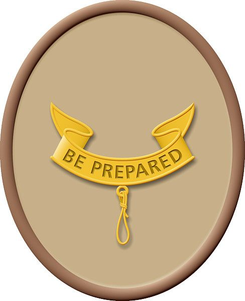
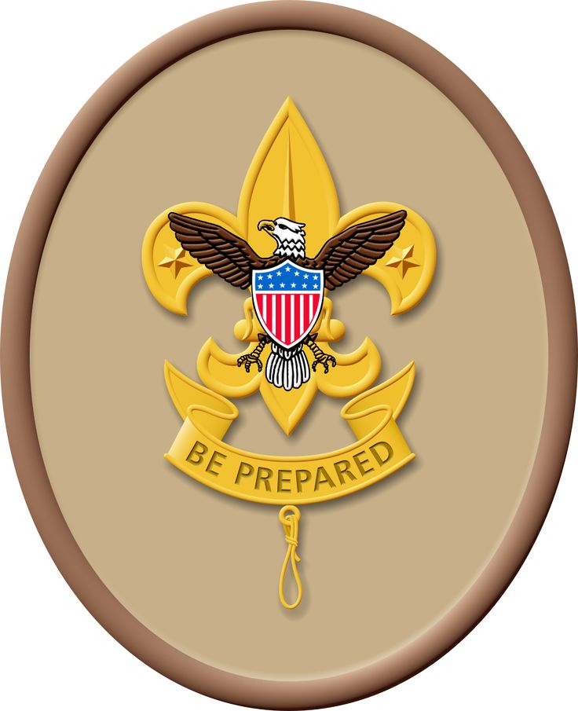
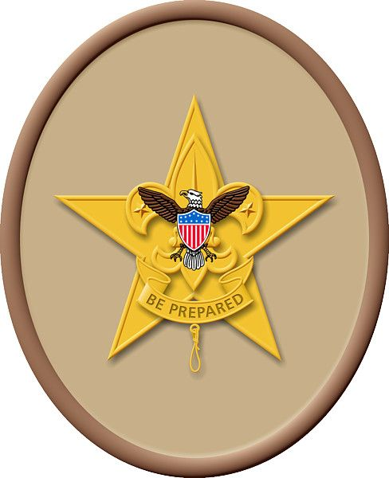
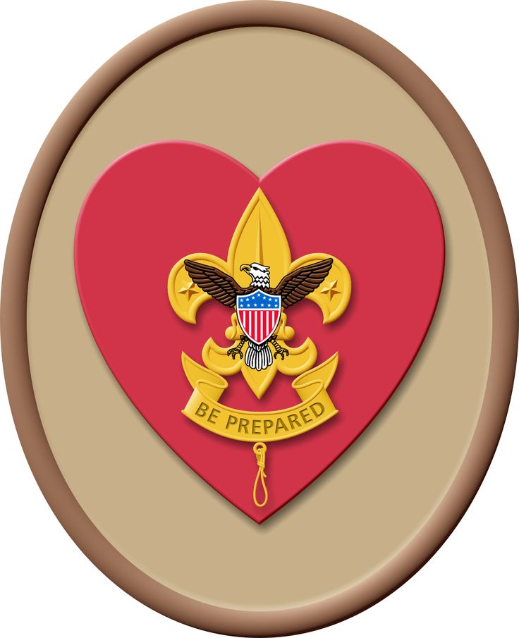
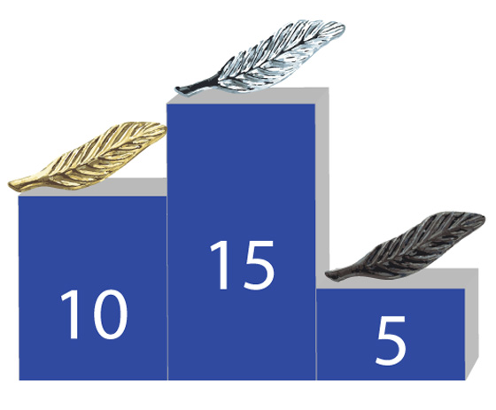

Guide to Boards of Review

Scouts BSA Troop 2 (Chartered 1921)
Boy Scouts of America
Michigan Crossroads Council
West (President Ford Service Area)
Chief Okemos District
Table of Contents
- Purpose of a Board of Review
- Composition of a Board of Review
- Mechanics of a Board of Review
- Mechanics of a Board of Review for Eagle Rank
- The Nature of the Questions
- What Every Scout Should Know
- Scout Rank
- Tenderfoot Rank
- 2nd Class Rank
- 1st Class Rank
- Star Rank
- Life Rank
- Eagle Rank
- Eagle Palms
Revised 2021
Purpose of a Board of Review:
The members of a Board of Review should have the following objectives in mind:
- To make sure the Scout has completed the requirements for the rank.
- To see how good an experience the Scout is having in the unit.
- To encourage the Scout to progress further.
Additionally, the Board of Review provides "quality control" on advancement within the unit, it provides an opportunity for the Scout to develop and practice those skills needed in a interview situation, and it is an opportunity for the Scout to review their accomplishments.
The Board of Review is NOT a retest; the Scout has already been tested on the skills and activities required for the rank. However, the chairman of the Board of Review should ensure that all the requirements have been "signed off" in the Scout's handbook. Additionally, the chairman should ensure that leadership and merit badge records are consistent with the requirements for the rank.
* * The Board of Review is an opportunity to review of the Scout's attitudes, accomplishments and their acceptance of Scouting's ideals. * *
Composition of a Board of Review:
For all ranks (except Eagle) and Eagle palms, the Board of Review consists of three to six members of the Troop Committee. The Troop Advancement Chairperson typically acts as the chairperson of the Board of Review. Relatives or guardians may not serve as members of a Scout's Board of Review. Unit leaders (Scoutmaster, Assistant Scoutmasters, Varsity Coach, Post Advisor, etc.) should not participate in a Board of Review unless absolutely necessary.
For the rank of Eagle, the Board of Review consists of three to six members drawn from Scouting and the community. The members of the Board of Review are selected by the District Advancement Committee; at least one member of the District Advancement Committee must be a member of the Board of Review for Eagle, and serves as chairperson of the Board of Review. Unit leaders from the Scout's unit, relatives, or guardians may not serve as members of a Scout's Board of Review for Eagle. A Board of Review for Eagle may contain members of the community who are not registered Scouters; however, they should be knowledgeable of the principles of Scouting. For example, a representative from a chartering organization, an adult Eagle Scout (even if not currently registered), or a religious leader are frequently asked to assist with an Eagle Board of Review. The Scout may request an individual to be a member of their Board of Review. As a general rule, no more than one member of an Eagle Board should be associated with the Scout's unit.
Mechanics of a Board of Review:
The Scout is introduced to the board.
The Scout should be in full uniform (local or unit custom may dictate regarding neckerchief and badge sash).
The Scout should be asked to come to attention, and recite one or more of the following:
- The Scout Law
- The Scout Oath
- The Scout Motto
- The Scout Slan
- The Outdoor Code
For the lower ranks, one or two (usually the Law and Oath) should be sufficient. For higher ranks, more may be expected. One or two re-tries are appropriate, especially for younger Scouts, or if the Scout appears nervous.
The board members are invited to ask questions of the Scout (see the sections appropriate to each rank). The questions should be open-ended, offering an opportunity for the Scout to speak about their opinions, experiences, activities, and accomplishments. Avoid questions which only require a simple one or two word answer. If an answers is too brief, follow up with a, "Why?" or, "How can that be done?" to expand the answer. The questions need not be restricted to Scouting topics; questions regarding home, church, school, work, athletics, etc. are all appropriate. The Chairperson should be made aware of any "out-of-bounds" areas; these should be communicated to the board before the Board of Review begins (e.g., if a Scout is experiencing family difficulties due to a divorce, it would be prudent to avoid family issues.)
The time for a Board of Review should be from 15 to 30 minutes, with the shorter time for the lower ranks. When all members have had an opportunity to ask their questions, the Scout is excused from the room. The board members then consider whether the Scout is ready for the next rank; the board's decision must be unanimous. Once the decision is made, the Scout is invited back into the room, and the Chairperson informs the Scout of the board's decision. If the Scout is approved for the next rank, there are general congratulations and hand shakes all around, and the Scout is encouraged to continue advancing. If there are issues which prevent the Scout from advancing to the next rank, the board must detail the precise nature of the deficiencies. The Scout must be told specifically what must be done in order to be successful at the next Board of Review. Typically, an agreement is reached as to when the Scout may return for their subsequent Board of Review. The Chairperson must send a written follow up, to both the Scout and the Scoutmaster, regarding the deficiencies and the course of action needed to correct them.
Mechanics of a Board of Review for Eagle Rank
The mechanics of a Board of Review for Eagle are similar to all other Boards of Review, except that a Board of Review for Eagle is more in depth, and might last as long as 45 minutes to an hour. Additionally, the Eagle Scout Rank Application, Letters of Recommendation (minimum of 3) and Eagle Project Notebook must be present and reviewed by the board. Questions about these documents are appropriate, but the letters of recommendation are for the board's use only; any comments or questions about them should not reveal who wrote the letters. The letters are retained by the District Advancement commitee member, and are never given to the Scout. After the application has been approved by National Eagle Board of Review and returned to the local council (typically 4-6 weeks), the letters of recommendation are destroyed.
The Nature of the Questions:
On the following pages are typical Board of Review questions for each rank. The questions for the lower ranks are simpler and generally deal with factual information about the Scout's participation in their unit, and their approach to applying the skills they have learned toward earning the next rank. The questions for the higher ranks are less factual, and generally seek to aid understanding of how Scouting is becoming an integral part of the Scout's life. Remember: it is not the point of a Board of Review to retest the Scout. However, questions like, "Where did you learn about ..." or "Why do you think it is important for a [rank] Scout to have this skill?" are valid.
If a Scout appears nervous or anxious about the Board of Review, it might be appropriate to ask one or two questions from the list for a lower rank, to help "break the ice" and establish some rapport. In general, within a rank, the questions are arranged from "easiest" to "most difficult".
For each rank, there is a question about advancing to the next rank. The purpose of this question is to encourage advancement, but it should not be asked in a way that pressures the Scout. [Note: If the Board of Review is for the Life rank, and the Scout is at or near their 17th birthday, some pressure towards Eagle may be in order. At the very least, be certain that the Scout realizes that their time is running out.]
For higher ranks, there is a question from The Scout Handbook about basic Scouting history.
For Order of the Arrow members, there are questions about the role of OA within Scouting.
More questions are provided than can typically be accommodated in the time suggested. The Board of Review will need to select the questions which are appropriate for the particular Scout and their experiences.
These questions are intended to only serve as a guide. Units should freely add to, or remove from, these lists as they feel appropriate.
What Every Scout Should Know
Every Scout should know the meaning of "Scout Spirit". They may have all kinds of answers, many of which are quite good. The real answer is, To live by the Scout Oath and Law. It is fair to ask at any rank, what is the meaning of Scout Spirit, what it means to them, how they demonstrates Scout Spirit in the Troop, at home, at school, etc.
Scout Oath:On my honor I will do my best |
Outdoor Code:As an American, I will do my best to -- |
Scout Law:
|
Scout Motto:Be Prepared. Scout Slogan:Do a good turn daily. |

Scout Rank
This is the Scout's first experience with a Board of Review. The process may require some explanation on the part of the Board of Review Chairperson.
The first few questions in the Board of Review should be simple. The Board of Review should try to gain a sense of how the Scout is fitting in to the Troop, and the Scout's level of enjoyment of the Troop and Patrol activities.
Encourage advancement to Tenderfoot. Point out that the Scout may have already completed many of the requirements up to 1st Class.
The approximate time for this Board of Review should be 10-15 minutes.
Sample Questions:
- When did you join our Troop?
- How many Troop meetings have you attended in the last two months?
- Do you know the Scout Oath, Scout Law, Scout motto, and Scout slogan? How hard was it to explain them in your own words?
- What is different about the Scout Handshake?
- Do you remember the 4 steps of Advancement (Leard, Test, Review, Recognise)? This board is the 3rd.
- What is the Patrol Method? What is your patrol name ,emblem, flag, yell?
- How do you define "Scout Spirit"?
- What did you learn about knots and ropes for the Scout Rank?
- What did you learn about pocketknife safety?
- Why do we whip or fuse the ends of a rope?

Tenderfoot Rank
This is the Scout's second experience with a Board of Review. The process may require some explanation on the part of the Board of Review Chairperson.
The first few questions in the Board of Review should be simple. The Board of Review should try to gain a sense of how the Scout is fitting in to the Troop, and the Scout's level of enjoyment of the Troop and Patrol activities.
Encourage advancement to 2nd & 1st Class. Point out that the Scout may have already completed many of the requirements for 2nd Class.
The approximate time for this Board of Review should be 15-20 minutes.
Sample Questions:
- When did you join our Troop?
- How many Troop meetings have you attended in the last two months?
- What did you do at your last patrol meeting?
- What is a big difference in earning rank after First Class?
- Tell us about your last Troop campout.
- What is in your personal first aid kit?
- How would the first aid skills you must know for Tenderfoot help on a campout?
- Where did you learn how to fold the American flag? Tell us about your first experience with this skill.
- How would you avoid poison ivy (poison oak, sumac)?
- If you were on a hike and got lost, what would you do?
- What is the "Buddy System" that we use in Scouting? When do we use it?
- Why do you think there are physical fitness requirements (push-ups, pull-ups, etc.), and a retest after 30 days, for the Tenderfoot rank?
- What have you learned about handling woods tools (axes, saws, etc.)?
- What does it mean to a Tenderfoot Scout to "Be Prepared"?
- Do you feel that you have done your best to complete the requirements for Tenderfoot? Why?
- What "good turn" have you done today?
- Please give us an example of how you obey the Scout Law at home (school, church)?
- How do you define "Scout Spirit"?
- What does it mean for a Scout to be "Kind"?
- Do you have any special plans for this summer? The Holidays?
- When do you plan to have the requirements completed for 2nd Class?
- What do you like best about our Troop?

2nd Class Rank
This is the Scout's third Board of Review. The process should be familiar, unless it has been some time since the Board of Review for Tenderfoot.
Questions should focus on the use of the Scout skills learned for this rank, without retesting these skills. The Board of Review should try to perceive how the Scout's patrol is functioning, and how this Scout is functioning within their patrol.
Encourage work on the remaining requirements for 1st Class; many of the easier ones may have already been completed.
The approximate time for this Board of Review should be 15-20 minutes.
Sample Questions:
- Where did you go on your hike? How did you choose the location?
- How many patrol meetings have you attended in the last 3 months?
- What did your patrol do at its last meeting?
- Tell us about a service project in which you participated.
- Where did you go on your last Troop campout? Did you have a good time? Why?
- Why is it important to be able to identify animals found in your community?
- Tell us about the flag ceremony in which you participated.
- How are a map of the area and a compass useful on a campout?
- How do you define "Scout Spirit"?
- Have you ever done more than one "good turn" in a day? Ask for details.
- Have you earned any merit badges?
If "Yes": Which ones? Why did you choose them? Who was your counselor?
If "No": Encourage getting started, and suggest one or two of the easier ones. - Did you attend summer camp with our Troop last summer?
If "Yes": What was your best (worst) experience at summer camp?
If "No": Why not? - Do you plan to attend summer camp with our Troop next summer?
If "Yes": What are you looking forward to doing at summer camp?
If "No": Why not? - How do you help out at home, church, school?
- What class in school is most challenging for you? Why?
- One of the requirements for 2nd Class is to participate in a program regarding drug, alcohol and tobacco abuse. Tell us about the program in which you participated.
- How is it possible to live the Scout Oath and Law in your daily life?
- What does it mean to say, "A Scout is Trustworthy"?
- When do you expect to complete the requirements for 1st Class?
- What suggestions do you have for improving our Troop?

1st Class Rank
By this point the Scout should be comfortable with the Board of Review process.
The Scout should be praised for their accomplishment in achieving 1st Class (particularly if they joined Scouts BSA less than a year ago). In achieving the rank of 1st Class, the Scout should feel an additional sense of responsibility to the troop and to their patrol.
The 1st Class rank will produce additional opportunities for the Scout (Order of the Arrow, leadership, etc.).
Merit badges will begin to play a role in future advancement to the Star and Life ranks. Encourage merit badge work if it has not already begun.
The approximate time for this Board of Review should be 20 minutes.
Sample Questions:
- On average, how many Troop meetings do you attend each month?
- What part of Troop meetings are most rewarding to you?
- What is the Scout Slogan? What does it mean for a 1st Class Scout?
- Tell us about your last campout with the Troop. Where did you go? How did you help with meal preparation? Did you have a good time? (If "No", why not?)
- If you were in charge of planning and preparing a dinner for your next campout, what would you select?
- As a 1st Class Scout, what do you think the Star, Life, and Eagle Scouts will expect from you on an outing?
- Does your family do any camping? What have you learned in Scouts, that you have been able to share with your family to improve their camping experiences?
- Why do you think that swimming is emphasized in Scouting?
- Why is it important for you to know how to transport a person who has a sprained ankle?
- Why is it important for you to be able to recognize local plant life?
- What did you learn about using a compass while completing the orienteering requirement?
- What does it mean to say, "A Scout is Courteous"?
- Why are merit badges a part of Scouting?
- How frequently do you attend religious services? Does your whole family attend?
- What is your most favorite part of Scouting? Least favorite?
- How does a Scout fulfill their "Duty to Country"?
- How do you define "Scout Spirit"?
- What is the Order of the Arrow? What is the primary function of OA?
- Who was Lord Baden-Powell?
- When do you think you might be ready for Star Scout?
- What suggestions do you have for improving our Troop?

Star Rank
With the Star rank, emphasis is placed upon service to others, merit badges, and leadership. Scout skills remain an important element for the Star Scout; however, the emphasis should be on teaching other Scouts these skills.
Explore how the Star scout can assist with leading their patrol and troop. Attempt to understand how the Scouting philosophy is becoming part of the Scout's life.
Often the Star rank is a place where Scouts "stall out". Encourage the Scout to remain active, and participate fully in their patrol and troop. If the Scout appears to be looking for additional opportunities, suggest leadership positions such as Den Chief or Troop Guide.
The approximate time for this Board of Review should be 20 minutes.
Sample Questions:
- How many Troop outings have you attended in the last three months?
- Tell us about the last service project in which you participated.
- What does it mean for a Star Scout to "Be Prepared" on a daily basis?
- How have the Scout skills that you have learned helped you in a non-Scouting activity?
- How many merit badges have you earned? What was the most difficult (fun, challenging, expensive, etc.)?
- Which is more important: Becoming a Star Scout, or learning the skills prescribed for a Star Scout?
- Why do you think a Scoutmaster's Conference is required for advancement in rank?
- How do you define "Scout Spirit"?
- What is the most important part of a Troop Court of Honor? Why?
- What leadership positions have you held outside of your patrol? What challenges did they present? What are your personal leadership goals and objectives?
- How would you get a Scout to do an unpleasant task?
- What extracurricular activities do you participate in at school?
- What responsibilities do you have at home?
- What is our "Duty to God"?
- What does it mean to say "A Scout is Loyal"?
- How are the Scout Oath and Law part of your daily life?
- What is the Outdoor Code? Why is it important?
- If the Scout is a member of the Order of the Arrow:
When did you complete your "Ordeal", "Brotherhood"?
What does membership in the OA signify? - Have you received any special awards or accomplishments in school, athletics, or church?
- Baden-Powell's first Scout outing was located on an island off the coast of Great Britain; what was the name of that island? [Answer: Brownsea Island]
- When do you plan on achieving the Life rank?
- What suggestions do you have for improving our Troop?

Life Rank
The Life rank is the final rank before Eagle. The Life Scout should be fully participating in the Troop, with emphasis being placed on leadership in the unit, as well as teaching skills and leadership to the younger Scouts.
Merit Badge work should be a regular part of the Scout's career. Scouting values and concepts should be an integral part of the Scout's daily life.
At this point, the Scout is starting to "give back to Scouting" through leadership, training of other Scouts, recruiting, keeping Scouts active in the program, etc.
Explore suggestions for improving the program.
The approximate time for this Board of Review should be 20 - 30 minutes.
Sample Questions:
- What is the most ambitious pioneering project with which you have assisted? Where?
- What has been your worst camping experience in Scouting?
- How many patrol meetings has your patrol held in the last three months? How many of them have you attended?
- Have any of the merit badges you have earned lead to hobbies or possible careers?
- What are your hobbies?
- Of the merit badges you have earned, which one do you think will be of greatest value to you as an adult? Why?
- Why do you think that the three "Citizenship" merit badges are required for the Eagle Rank?
- What is your current (most recent) leadership position within the Troop? How long have you held that position? What particular challenges does it present? What is Leadership?
- Do you have any brothers or sisters who are in Scouts (any level)? What can you do to encourage them to continue with Scouts, and to move forward along the Scouting Trail?
- How do you choose between a school activity, a Scout activity, and a family activity?
- Why do you think that Star and Life Scouts are required to contribute so much time to service projects? What service projects are most rewarding to you? Why?
- Why do you think that a Board of Review is required for rank advancement?
- How has Scouting prepared you for the future?
- What does it mean to say, "A Scout is Reverent"?
- What does "Scout Spirit" mean to a Life Scout?
- Why do you think that Scouting for Food is referred to as a "National Good Turn".
- The Scout Oath refers to "Duty to Self"; what duty do we have to ourselves?
- If the Scout is a member of OA:
What role does OA play in Scouting?
What honor do you hold in OA?
What is the difference between Scout "ranks" and OA "honors"? - In what year was Boy Scouts of America founded? [Answer: February 8, 1910 - BSA Birthday]
- Have you begun to think about an Eagle Service Project? What are you thinking about doing? When?

Eagle Rank
The Board of Review for the Eagle Rank is different from the other Boards of Review in which the Scout has participated. The members of the Board of Review are not all from their Troop Committee. Introductions are essential, and a few "break in" questions may be appropriate.
At this point, the goal is to understand the Scout's full Scouting experience, and how others can have similar meaningful Scouting experiences. Scouting principles and goals should be central to the Scout's life; look for evidence of this.
Although this is the final rank, this is not the end of the Scouting trail; "Once an Eagle, always an Eagle". Explore how this Eagle Scout will continue with Scouting activities, and continued service to their home, church, and community.
The approximate time for this Board of Review should be 45 - 60 minutes.
Sample Questions:
- What would you suggest adding to the Scout Law (a thirteenth point)? Why?
- What one point could be removed from the Scout Law? Why?
- Why is it important to learn how to tie knots, and lash together poles and logs?
- What is the difference between a "Hollywood hero" and a real hero?
- Can you give me an example of someone who is a hero to you? (A real person, not a character in a book or movie.)
- Why do you think that the Family Life merit badge is a required merit badge?
- What camping experience have you had, that you wish every Scout could have?
- Have you been to Philmont or a National (International) Jamboree? What was your most memorable experience there?
- What is the role of the Senior Patrol Leader at a troop meeting (campout, summer camp)?
- If you could change one thing to improve Scouting, what would you change?
- What do you believe our society expects from an Eagle Scout?
- The charge to the Eagle requires that you give back to Scouting more than Scouting has given to you. How do you propose to do that?
- As an Eagle Scout, what can you personally do to improve your unit?
- What will you be doing in your unit, after receiving your Eagle Rank?
- Tell us how you selected your Eagle Service Project.
- From your Eagle Service Project, what did you learn about managing or leading people? What are the qualities of a good leader?
- What part of your Eagle Service Project was the most challenging? Why?
- If you were to manage another project similar to your Eagle Service Project, what would you do differently to make the project better or easier?
- What are your future plans (high school, college, trade school, military, career, etc.)?
- Tell us about your family (parents, siblings, etc.). How do you help out at home?
- What do you think is the single biggest issue facing Scouting in the future?
- How do your friends outside of Scouting react when they learn that you are a Scout? How do you think they will react when they learn that you have become an Eagle Scout?
- Why do you think that belief in God (a supreme being) is part of the Scouting requirements?
- How do you know when a Scout is "active" in their unit?
- You have been in Scouting for many years, sum up all of those experiences in one word. Why?
- What one thing have you gained from your Scoutmaster's conferences over the years?
- How does an Eagle Scout continue to show Scout Spirit?
- What does Reverent mean to you?
- If the Scout is a member of the Order of the Arrow:
What does OA membership mean to you?
How does OA help Scouting and your unit? - Who brought Scouting from England to the United States? [Answer: William D. Boyce]
- What suggestions do you have for improving our Troop?
- [Traditional last questions] Why should this Board of Review approve your request for the Eagle Rank? or Why should you be an Eagle Scout?

Eagle Palms
Eagle Palms are awarded for continued leadership and skills development (merit badges) after the Eagle Rank has been earned. The purpose of this Board of Review is to ensure that the Eagle Scout remains active within the unit, contributes to the leadership of the unit, and assists with the growth of the other Scouts within the unit.
The approximate time for this Board of Review should be 15 minutes.
Sample Questions:
- As an Eagle, have the Scout Oath and Law gained new meaning for you? How?
- Why is it important to develope and identify leadership? How do you do this?
- Since earning your Eagle, what merit badges have you earned?
- Since earning your Eagle (or last Palm), in what service projects have you participated?
- How do you plan to continue your involvement with Scouting?
- How do you define "Scout Spirit"?
- What would you say to a Life Scout who is only minimally active within their unit, and who does not seem motivated to continue along the Scouting Trail?
- If a Life Scout was having difficulty selecting an Eagle Service Project, what would you suggest to them?
- What is the primary role of the Scoutmaster?
- How have you begun to "... give back to Scouting more than Scouting has given to you".
- In what year was the first World Jamboree held? [Answer: 1920]
- What suggestions do you have for improving our Troop?